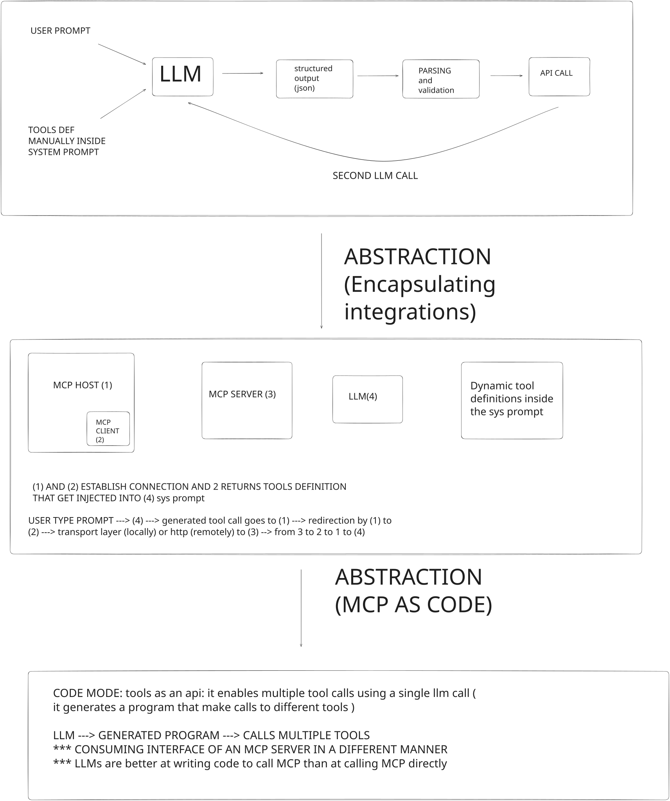

From 'Dumb' next token prediction to 'planning' and solving tasks
2026-06-13
Hey. In this article, I'll be talking about how we went from a tool that only knows how to predict the next word to a tool that has the power to plan and solve complex tasks. I should emphasize that this is not an "article" as you might read elsewhere on the internet, but rather my own perspective on how engineers managed to turn a "next-token prediction tool" into a "task-solver tool".

The image above represents three stages in the evolution of turning an LLM into a tool capable of doing tasks beyond text generation.
The first rectangle shows how we turned a next-token prediction tool into a tool capable of using other tools — meaning it no longer relies solely on the internal capacities encoded in its weights, but can also call external tools (a database, a calculator, a weather API, etc.). It's like giving "hands" to a highly cultivated person who was born handicapped. We achieve this by wrapping the LLM in what we call a harness: tools are presented to the LLM manually in the system prompt, and it's up to the LLM to decide whether to use one. The LLM produces a JSON, that JSON is parsed and validated by the harness, and then an API call to the tool is made — that's the generic workflow.
Pros
- Giving "hands" (more capabilities) and "glasses" (more knowledge) to LLMs.
- Reduced hallucination.
Cons
- One-to-one relationship: a single LLM call can produce only one tool call.
- Lack of standardization: wiring/integration must be done manually (not a scalable approach).
- Difficulty accessing the right tool.
The second rectangle represents the second layer of abstraction. It introduces the notion of client–server communication: now tools are encapsulated in an MCP server, so we no longer need to wire each tool to the LLM individually. We just make sure it's compatible with the server, and we then have access to all the tools.
Pros
- Scalability (from 1:1 to 1:N).
Cons
- One-to-one relationship: a single LLM call can still produce only one tool call.
- Context overflow: all tools are generally loaded into the system prompt, which narrows the context window and can lead the LLM to pick the wrong tool.
The third rectangle represents the third layer of abstraction. Here, MCP resources are consumed in a better way (via a TypeScript API). This approach is known as Code Mode and was introduced by Cloudflare in one of their articles1. Code Mode adds the “planning capacity” to the LLM, which means that the LLM will no longer generate a single “tool call” but rather code that makes use of several tools — which means less latency, more context, and better results.
Pros
- Less latency: one LLM call can orchestrate several tools at once.
- More context: only the relevant tools are pulled in, not all of them.
- Better results: the LLM can plan and compose tool usage as code.
- Cloudflare — Code Mode: a new way to write LLM tools
Postscript: this content is human-written but LLM-formatted.